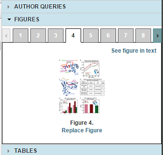
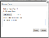
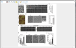
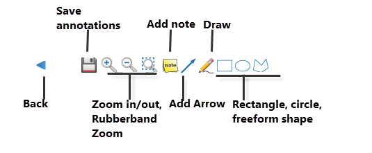
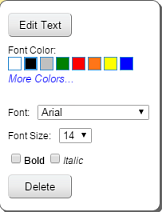
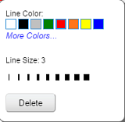

The Figures widget lets you view a thumbnail of every image in your article. To go to the image, click See figure in text.

You can replace figures and mark up (annotate) figures.
When you replace figures, you aren't replacing it yourself. instead, you attach and upload a figure and ArticleExpress alerts the editors.

ArticleExpress uploads the figure and displays Figure Replacement Requested above the figure.
If you have special instructions on a figure or are answering Author Queries, you can use the ArticleExpress Annotation feature to mark up a figure.


| Annotation type | Attributes and dialog | Dialog |
|
Note You must click/drag the Note to open it in the figure. Click the check mark to insert the note in the figure. Click the X mark to cancel placing the note. |
Text, font color, font, font size, bold/italic. |
 |
| Arrow | Line color and line size Line color and line size Line color and line size |
 |
| Draw | ||
| Rectangle, circle, free-form |
figures.htm | Copyright © 2015 Dartmouth Journal Services All Rights Reserved.
{kind=link}
{kind=link}